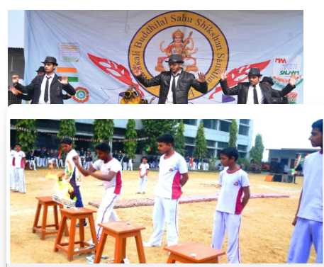

Our school offers a wide range of facilities to provide students with a comfortable, supportive, and enriching learning environment. We focus on academic excellence, personal growth, and the overall development of every student. Our well-maintained classrooms, experienced teachers, and student-friendly atmosphere help learners build knowledge, confidence, and essential life skills.
We provide modern educational facilities, including a well-equipped computer lab, a library with a variety of books, and science laboratories for practical learning. Sports and recreational activities encourage physical fitness, teamwork, and discipline. We also emphasize cleanliness, safe drinking water, hygienic washrooms, and a secure campus to ensure the well-being of our students.
Beyond academics, our school organizes cultural programs, competitions, celebrations, and extracurricular activities to nurture creativity and leadership qualities. We encourage students to participate actively, discover their talents, and develop their interests. Our aim is to provide quality facilities that support holistic education and prepare students for a bright and successful future.